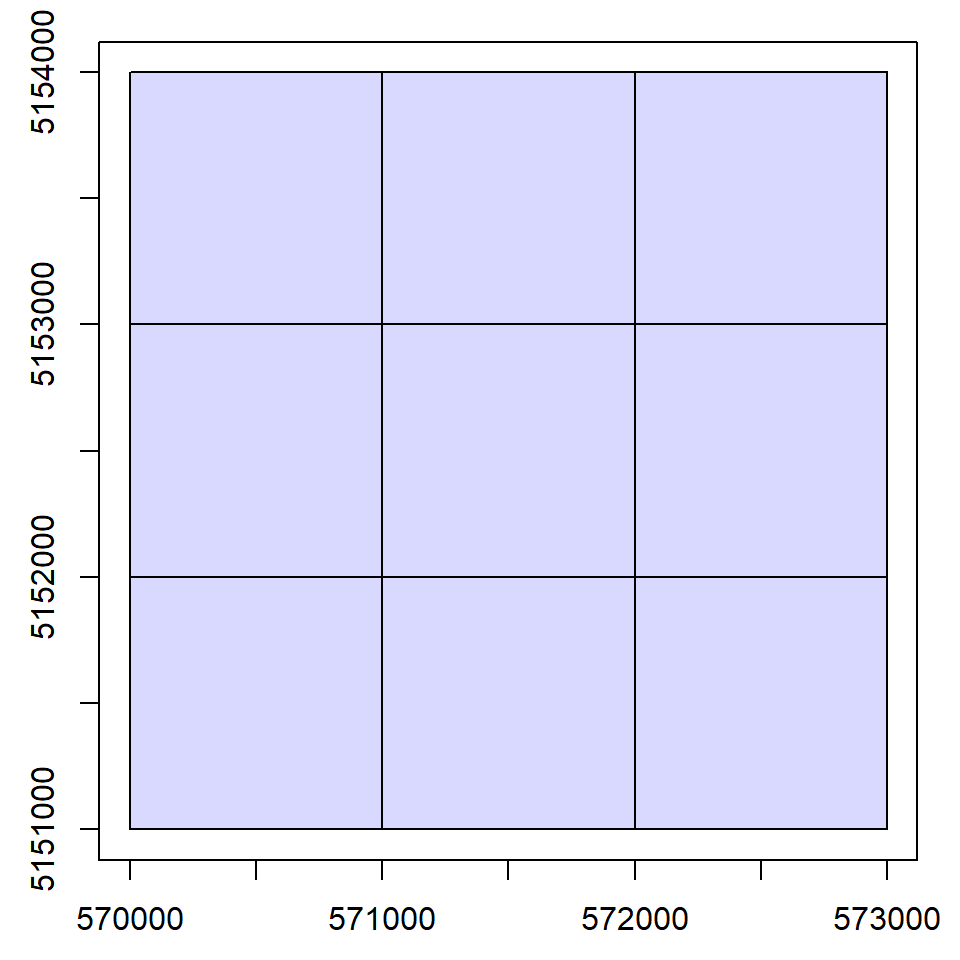
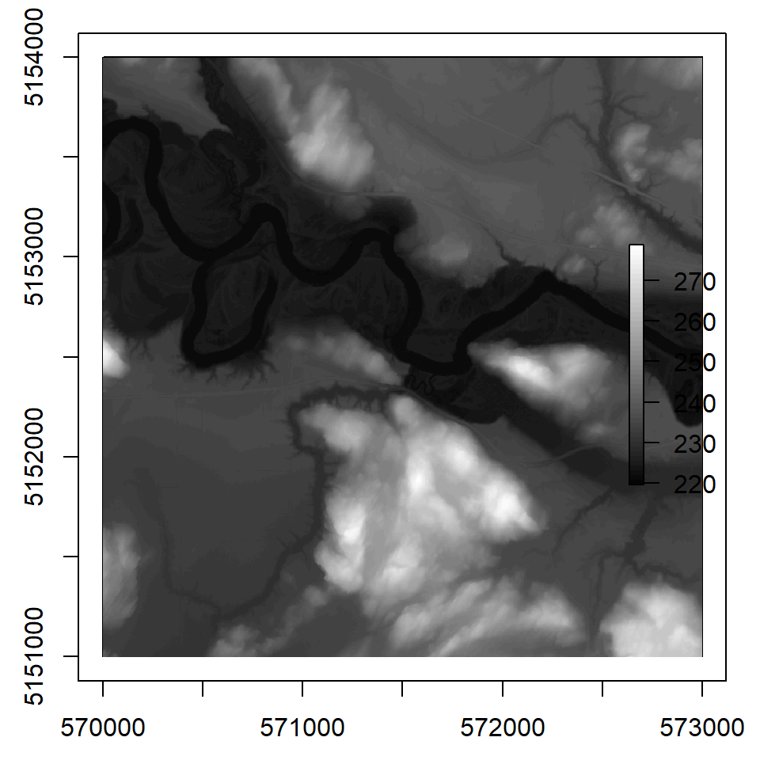

2 Road Extraction Data Requirements
The road extraction method, implemented using the ALSroads package, requires three inputs:
- A LiDAR point cloud in the format of a collection of
.lasor.lazfiles. Each file must be spatially indexed with a.laxfile (see also the lidR book chapter 18.3). - A Digital Terrain Model (DTM) that corresponds to the point cloud collection coverage. This DTM can be generated with
lidR(refer to thelidRbook chapter 4. - A pre-existing vectorial road network (lines), typically in a shapefile or geopackage format.
A fourth, optional input can be included to strongly enhance the method.
- A vectorial map (polygons) of water bodies.
2.1 LiDAR Data
Updating and enhancing road segments using ALSroads requires LiDAR data that covers the spatial extent of the roads being updated. For use in the ALSroads package, LiDAR data must be:
- Non-normalized: to preserve the geometry of the landscape.
- Spatially indexed: to query areas of interest quickly and improve method performance.
- Include intensity values: used by the method.
- In a projected coordinate system and in meters: some parameters are hardcoded in meters.
- Have a density of 5-10 points/m²: less than 5-10 points/m² and the algorithm is not guaranteed to work; more than 5-10 points/m² is not useful and will increase the computation time. If the density of the input point cloud is over 10 points/m², it can be decimated on-the-fly using the
filterargument (see ‘lidR’ book chapter 2.1.1).
library(lidR)
ctg <- readLAScatalog("data/03/ctg/", filter = "-drop_withheld -keep_random_fraction 0.25")
plot(ctg)
2.2 DTM Data
Road enhancement using ALSroads requires a Digital Terrain Model (DTM) as an input. DTMs, broadly described as an ‘image’ of the ground, are used for several purposes, including stream flow, basin hydrology, and watershed analysis. The ALSroads method uses a 1-meter resolution DTM to estimate the slopes and roughness of the terrain. For use in the ALSroads package, the input DTM must:
- Have a resolution of at least 1 m: higher resolution will be downscale on-the-fly.
- Cover the extent of the LiDAR coverage.
- Match the coordinate system of the LiDAR coverage.
library(raster)
dtm <- raster("data/03/DTM.tif")
plot(ctg)
plot(dtm, col = gray(1:50/50), add = T)
2.3 Existing Road Network
The road extraction method implemented using ALSroads updates an existing road network. Therefore, an existing network is a critical input. The method will only enhance the roads that are on the existing network. The existing road network must:
- Be a simple feature (sf) format (line).
- Match the coordinate system of the LiDAR coverage.
library(sf)
roads <- st_read("data/03/roads.shp", quiet = TRUE)
plot(ctg)
plot(st_geometry(roads), add = T)
2.4 Water Bodies (optional)
An optional input for road extraction using ALSroads is a set of spatial polygons (sf format) of water bodies. An accurate map of water bodies is not necessary to perform the road extraction computation but:
It helps to find roads by masking lakes that can easily be interpreted as highly drivable areas because they are perfectly flat, homogeneous, and located in cleared areas. From a geometrical point of view, lakes are the best place to drive a car. Unless the LiDAR point cloud is water classified, there is no way to determine that these flat cleared areas are not passable.
Water bodies are required to correctly identify and update roads that cross rivers using bridges. In a DTM, a river is a gap with strong slopes at each edge. These slopes represent an impassable obstacle and cannot be roads. Bridges are visible in the point cloud, but these points must be classified as bridges; otherwise, they have the same status as surrounding points. Geometrically speaking, a bridge in the point cloud is just a set of points above the ground, like trees. Therefore, an unlabeled bridge above a river is similar to a tree above the ground.
Providing a map of water bodies enables users to inform the method that the road being updated is known to cross a river. Therefore, the method will allow the passage of a gap (as it appears on the DTM) that would otherwise be considered impassable.
If water bodies are included in road extraction (recommended), they must:
- Be a simple feature (sf) format (polygon).
- Match the coordinate system of the LiDAR coverage.
library(sf)
waterbodies <- st_read("data/03/waterbodies.shp", quiet = TRUE)#> Reading layer `roads' from data source `E:\ALSroads_Guide\data\03\roads.shp' using driver `ESRI Shapefile'
#> Simple feature collection with 23 features and 20 fields
#> Geometry type: LINESTRING
#> Dimension: XY
#> Bounding box: xmin: 570000 ymin: 5151000 xmax: 573000 ymax: 5154000
#> Projected CRS: NAD83(CSRS) / UTM zone 17N